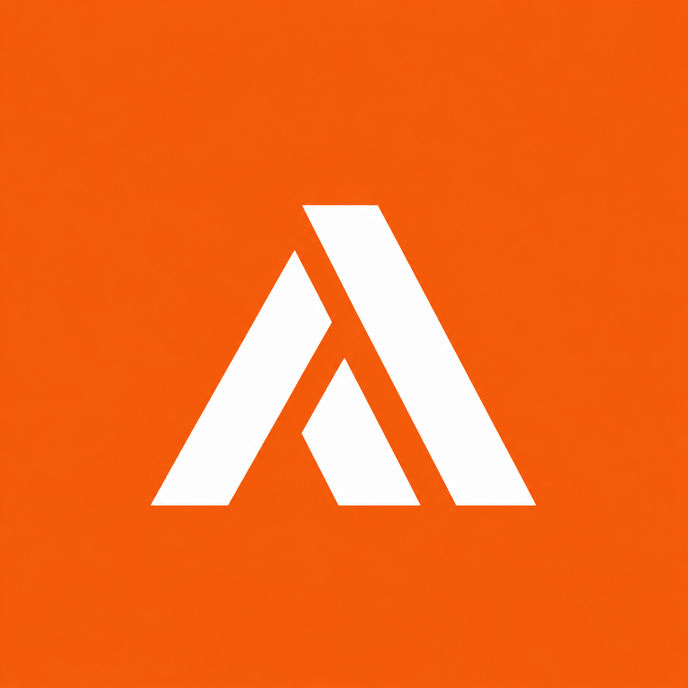

AUREX MEDICAL 01
HEALTHCARE · STARTUPBuilding for
a healthier future.
AUREX Medical is the medical startup I’m building. It brings my interest in healthcare together with hands-on experience in product sourcing, brand development, and e-commerce.
Let’s talk about AUREX ↗
AUREXMEDICAL